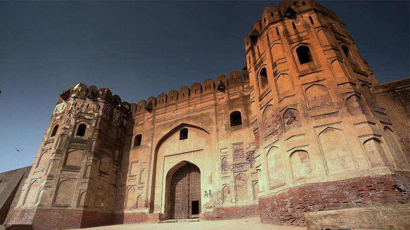
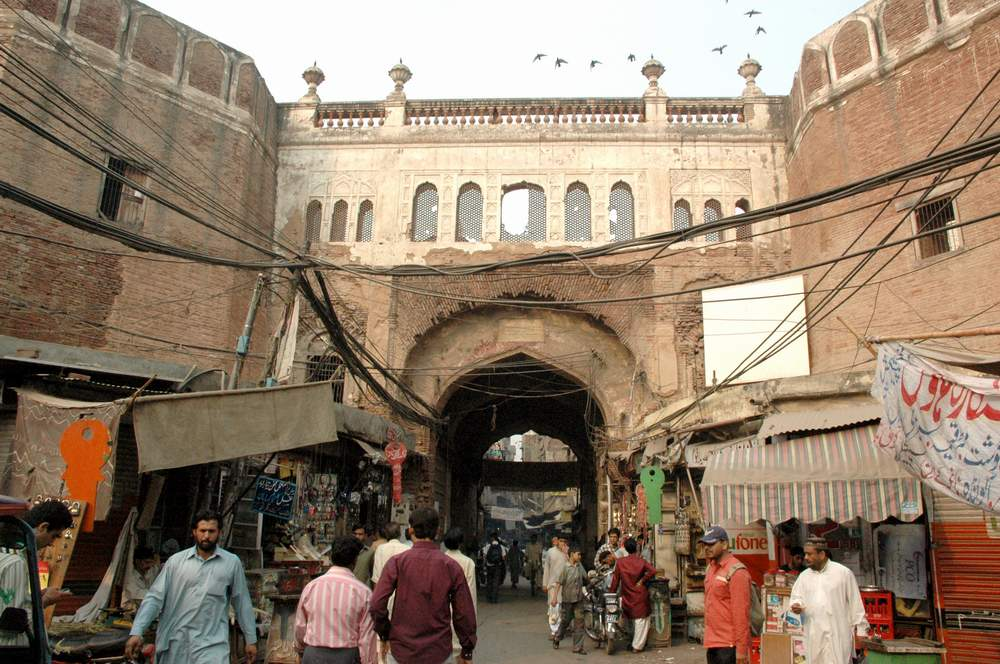

Gates of Lahore
1- Delhi Gate
The first mention on our list of the thirteen historical gates of Lahore is Delhi Gate. As the name suggests, Delhi Gate used to open towards Delhi – the-then capital of the subcontinent. Situated around 450 metres west of Circular Road, this gate holds a significant spot until this day due to its location. It connects to the busiest railway station in the city. Not to mention, many developing cities, including Jalandhar and Amritsar, are easily accessible via this gate. Although the original structure weakened and collapsed during the British era, it was later revived and rebuilt all over again.
2- ROSHNAI GATE

Next mention on our list [i.e., Roshnai Gate] is always highlighted among the historical places in Lahore. Roshnai Gate was connected to Badshahi Mosque built during the 17th century. The mosque is among the largest mosques in Pakistan. The most interesting thing about this gate is that it used to be lightened up for Muslim residents during the evening to facilitate them in reaching the mosque easily. Hence, the name Roshnai Gate. The gate is located between Lahore Fort and Bashahi Masjid, and it is present in its original condition. It is believed that the core structure of the Roshnai Gate remains undamaged and untouched.
3- AKBARI GATE

Akbari Gate is quite famous among the thirteen Gates of Lahore. Named after Jalal-Ud-Din Muhammad Akbar, Akbari Gate is located 850 metres south of Delhi Gate. Although the original structure of the gate got dilapidated, it was retrieved and renovated by the English rulers. Currently, the gate has lost its original beauty, but the area is quite famous due to an ancient bazaar called Akbar Mandi – the biggest wholesale and retail market in Lahore.
4- YAKKI GATE
Yakki Gate is also among the most famous gates in Lahore. As per the famous tale, Yakki Gate was named after a royal guard and saint Pir Zakki who fought bravely while saving the honour of the city. Unfortunately, he was killed during the same battle, and his head was decapitated. If you know about this famous legend, you would also know that the saint was buried in two separate graves – one for his head and another for his body.
5- BHATI GATE
Situated near the western division of Lahore, Bhati Gate – also known as Bhatti Gate – was home to Bhattis, a Rajput clan that used to reside near this gate. It exists in top-shape, and the area surrounding the gate is quite famous among the citizens for a number of reasons. Many visitors and locals frequent this area to enjoy many Lahori delicacies that are served throughout the day and night.
6- SHERANWALA GATE
The Sheranwala Gate was originally called Khizri Gate, which was named after Hazrat Khawaja Khizr Elias – a great Muslim saint. Later, the original name of this gate was changed to Sheranwala Gate since Maharaja Ranjit Singh placed two tigers [caged] near the gate after its construction. The word Sheranwala Gate translates to the Tiger’s Gate in the local lingo. Hence, the name Sheranwala Gate. You’d be surprised to know that the original structure of this gate exists to this date.
7- LOHARI GATE

To access the Walled City of Lahore, one of the many entrances was Lohari Gate, also known as Lahori Gate. Lohari Gate – the oldest gate out of thirteen dates – was named after the famous blacksmiths of the city in honour of their skill. It was renovated during the English rule and still exists.
8- TAXALI GATE
Taxali Gate – often spelled as Texali Gate – is one of the many gates that only exists in name today. Historically, it was located near the upper-class neighbourhood of the city, and several renowned artists used to call it home. According to historians, another reason why the Taxali Gate holds a significant place in the history of Lahore is that a royal money factory operated there. Hence, the name Taxali, which means the royal mint. Currently, the place is densely populated with several eateries and dhabas serving the famous Lahori breakfast items, including paye and halwa puri.
9- MOCHI GATE
The last mention on our list of thirteen Gates of Lahore is Mochi Gate. As per various historians, Mochi Gate was named after a Hindu Soldier, Pandi Moti Ram – a trench soldier who used to guard the gate during the Mughal era. Owing to the soldier’s dedication to his job, the rulers decided to honour him and named the gate after his position Many historians believe that Mochi is the ruined form of Morchi – a word from the Urdu language, which means trench soldier. Situated between Akbari Gate and Shah Almi Gate, the area surrounding Mochi Gate is still famous among legislators. Several political meetings, processions, and gatherings still take place in the Mochi Bagh, which is located next to Mochi Gate. This brings us to the end of our post on the famous Gates of Lahore. If you ever get a chance to visit the Walled City, make sure you stop by the city’s most famous parks. Meanwhile, if you are new to this city and not sure how to get around, check out our post on public transport in Lahore.
10- KASHMIRI GATE
Similar to Delhi Gate, Kashmiri Gate was named after its connection to Kashmir. Although there’s not much information available as to who initiated the construction of this gate, the core structure still stands tall and in good condition to this day. This area is mostly known for its famous Kashmiri Bazaar.
11- MORI GATE
The word ‘Mori’ means a small hole in the local lingo. Hence, Mori Gate is the smallest of all gates on this list and gave access to the city during the evening when all other gates had closed. In the past, it used to exist around 400 metres west of Lahori Gate. This structure was lost to time and erosion, so it doesn’t exist anymore.
12- MASTI GATE
One out of the thirteen entrances to the Walled City is Masti Gate. Named after a royal servant, Masti Baloch, the gate was completely demolished in the past, and there are no traces of this structure. However, it was situated near Lahore Fort – one of the famous UNESCO World Heritage Sites in Pakistan.
13- SHAH ALAM GATE
The next mention on our list of famous gates of Lahore is Shah Alam Gate, which is officially known as Shah-Almi. Situated between Mochi Gate and Lohari Gate, Shah Alam Gate was named after Muhammad Moazzam Shah Alam Bahadur, the son of Aurangzeb Alamgir. The gate’s core structure doesn’t exist since it was burnt down during riots before Pakistan’s independence.